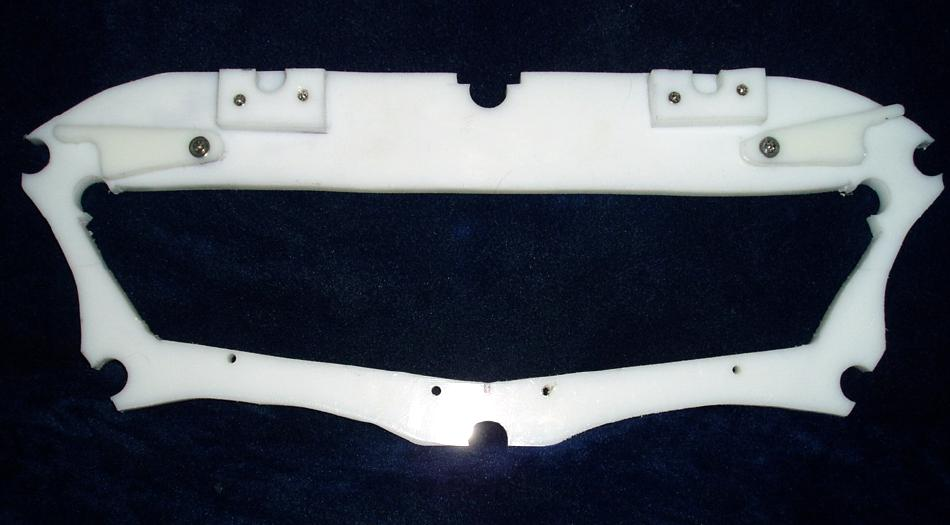

| Frame Modification ( Aft Deck Height) | Menu Previous Page Next Page |
|
 Completed Section 5 - A new 1.5in taller cross section 5 with all the changes incorporated from the previous page. The HDPE clips ( Rodolfo Maurette design) are there to secure the gunwales in place. In addition, the three small HDPE "snap-on" connectors along the top of the cross section secure the deckridge and the 2 layback tubes. |
|